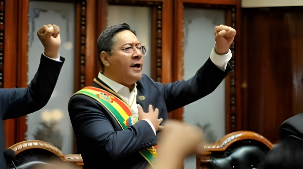

Longtemps présenté comme le modèle du socialisme indigéniste latino-américain, le Mouvement vers le Socialisme bolivien s'est déchiré en deux camps irréconciliables. La guerre fratricide entre Evo Morales et Luis Arce plonge la Bolivie dans une instabilité politique inédite depuis des décennies, sur fond de crise économique grave et de raréfaction du dollar. Analyse d'un pays à la croisée des chemins.
Lorsque Luis Arce remporte l'élection présidentielle d'octobre 2020, il incarne la revanche du MAS après l'épisode controversé de 2019 — coup d'État selon la gauche, résultat d'une fraude selon la droite. Ancien ministre de l'Économie de Morales pendant treize ans, il est perçu comme le continuateur naturel du « modèle bolivien » : État redistributeur, nationalisation des hydrocarbures, réduction spectaculaire de la pauvreté. Mais la cohabitation entre le président légal et le caudillo fondateur allait rapidement tourner à l'affrontement.
Evo Morales, exilé en Argentine puis rentré en Bolivie en 2020, a conservé la direction du MAS campesino — la branche syndicale et rurale du mouvement. Face à lui, Arce et son vice-président David Choquehuanca ont constitué une faction concurrente, soutenue par les appareils d'État. La question n'est plus idéologique — les deux hommes partagent le même corpus doctrinal — mais strictement personnelle et de pouvoir.
Le 26 juin 2024, un épisode saisissant secoue la Bolivie : le général Juan José Zúñiga, chef de l'armée de terre récemment limogé par Arce, dirige une colonne de blindés vers la place Murillo et fait enfoncer les portes du palais présidentiel de La Paz. Arce, face caméra dans son bureau, ordonne au général de retirer ses troupes. Zúñiga est arrêté quelques heures plus tard.
L'épisode, bref mais spectaculaire, soulève immédiatement des questions sur sa nature véritable. Morales accuse Arce d'avoir lui-même orchestré une mise en scène destinée à lui regagner une popularité en berne ; Arce dénonce une tentative putschiste authentique liée aux réseaux de l'ex-président. L'enquête judiciaire n'a pas, à ce jour, tranché définitivement. Ce qu'on sait avec certitude : la Bolivie est le seul pays d'Amérique du Sud à avoir vu des blindés envahir sa place présidentielle au XXIe siècle.
Arce remporte l'élection présidentielle avec 55 % des voix. Le MAS retrouve le pouvoir un an après la chute de Morales. Début apparent d'une cohabitation entre les deux hommes.
Rupture progressive entre Arce et Morales. Les congrès du MAS se multiplient, chaque faction revendiquant la légitimité du parti. Violences physiques entre les deux camps lors de plusieurs événements.
Le Tribunal électoral suprême invalide la candidature de Morales aux élections de 2025, invoquant une disposition constitutionnelle limitant à deux les mandats présidentiels. Morales conteste la décision et appelle à la mobilisation.
Tentative de coup d'État du général Zúñiga. Blindés place Murillo. Arce l'affronte en direct. Zúñiga arrêté. La Bolivie fait la une des médias mondiaux.
Blocus des routes par les partisans de Morales pendant plusieurs semaines. Pénuries localisées d'aliments et de carburant. L'économie subit une pression supplémentaire.
Arce gouverne en lame de canif. Morales, exclu du processus électoral, maintient une pression de la rue. La campagne pour les élections de 2025 reste chaotique. La droite espère tirer profit du chaos de la gauche.
Pendant quinze ans, la Bolivie a affiché l'une des croissances les plus robustes d'Amérique latine, tirée par les exportations de gaz naturel vers le Brésil et l'Argentine. Ce « miracle bolivien » a permis une réduction massive de la pauvreté — de 60 % en 2006 à moins de 35 % en 2019 — et l'émergence d'une classe moyenne indigène inédite. Mais la chute des prix du gaz et l'épuisement progressif des gisements ont fragilisé le modèle dès le milieu des années 2010.
| Indicateur | 2014 (pic) | 2025 (estimé) |
|---|---|---|
| Réserves de change (Mds $) | 15,1 | ~1,7 |
| Croissance du PIB | 5,5 % | ~1,8 % |
| Exportations de gaz (Mds $) | 6,0 | ~2,1 |
| Déficit fiscal (% PIB) | -1,8 % | -8 % |
| Inflation officielle | 5,2 % | ~4,5 % |
La Bolivie détient les plus grandes réserves mondiales de lithium, estimées à 21 millions de tonnes, concentrées dans le Salar d'Uyuni. Dans un contexte de transition énergétique mondiale et de demande croissante pour les batteries électriques, cet atout est présenté comme la clé de voûte du développement futur du pays. En 2023, le gouvernement Arce a signé des contrats d'exploitation avec des consortiums russes et chinois, rompant avec l'approche prudente de Morales.
Mais les critiques sont nombreuses : les conditions contractuelles sont jugées défavorables à la Bolivie par plusieurs analystes ; la technologie de l'extraction directe du lithium (EDL) reste peu maîtrisée à grande échelle ; et les communautés indigènes des salars s'opposent à une exploitation jugée trop rapide et peu soucieuse de l'environnement. Le lithium reste, pour l'heure, une richesse sur le papier plus qu'une solution à la crise immédiate.
« Nous avons sorti le peuple bolivien de la pauvreté. Arce est en train de le replonger dedans. »
— Evo Morales, conférence de presse, La Paz, octobre 2024« Evo ne défend pas le peuple. Il défend son retour au pouvoir. Ce sont deux choses très différentes. »
— Luis Arce, discours présidentiel, novembre 2024Sur la scène internationale, la Bolivie maintient son ancrage dans l'ALBA (Alliance bolivarienne) et le bloc des pays progressistes latino-américains. Arce a entretenu des relations étroites avec Cuba, le Venezuela de Maduro et le Nicaragua, tout en cherchant à diversifier les partenaires économiques — notamment vers la Chine, premier investisseur dans le lithium. Les relations avec les États-Unis restent tendues depuis l'expulsion de l'ambassadeur américain sous Morales en 2008, sans normalisation en vue.
La Bolivie aborde les élections générales de 2025 dans un état de fragilité institutionnelle et économique préoccupant. L'exclusion judiciaire de Morales a redistribué les cartes sans clarifier l'avenir : le MAS arciste reste divisé, incapable de mobiliser l'enthousiasme des bases traditionnelles, tandis qu'une droite fragmentée cherche à capitaliser sur la lassitude de la population. Ce qui est en jeu dépasse le simple changement de gouvernement : c'est la capacité de la Bolivie à refonder un projet politique cohérent, à stabiliser ses finances publiques et à transformer sa richesse en lithium en développement réel et durable, sans reproduire la dépendance aux matières premières qui a structuré — et fragilisé — son économie depuis deux siècles.
Presentado durante años como modelo del socialismo indigenista latinoamericano, el Movimiento al Socialismo boliviano se ha desgarrado en dos campos irreconciliables. La guerra fraticida entre Evo Morales y Luis Arce sume a Bolivia en una inestabilidad política sin precedentes en décadas, sobre el telón de fondo de una grave crisis económica y la escasez de divisas. Análisis de un país en una encrucijada.
Cuando Luis Arce gana las elecciones presidenciales de octubre de 2020, encarna la revancha del MAS tras el controvertido episodio de 2019 —golpe de Estado según la izquierda, resultado de un fraude según la derecha—. Exministro de Economía de Morales durante trece años, es percibido como el continuador natural del «modelo boliviano»: Estado redistribuidor, nacionalización de hidrocarburos, reducción espectacular de la pobreza. Pero la convivencia entre el presidente legal y el caudillo fundador se tornaría rápidamente en enfrentamiento.
Evo Morales, exiliado en Argentina y luego retornado a Bolivia en 2020, conservó la dirección del MAS cocalero y campesino. Frente a él, Arce y su vicepresidente David Choquehuanca constituyeron una facción rival, apoyada por los aparatos del Estado. La disputa ya no es ideológica —ambos comparten el mismo corpus doctrinal— sino estrictamente personal y de poder.
El 26 de junio de 2024, un episodio impactante sacude Bolivia: el general Juan José Zúñiga, jefe del Ejército recientemente destituido por Arce, dirige una columna de blindados hacia la plaza Murillo e intenta forzar las puertas del palacio presidencial en La Paz. Arce, frente a las cámaras en su despacho, ordena al general retirar sus tropas. Zúñiga es detenido pocas horas después.
El episodio, breve pero espectacular, suscita de inmediato interrogantes sobre su verdadera naturaleza. Morales acusa a Arce de haber orquestado él mismo una puesta en escena para recuperar una popularidad en caída libre; Arce denuncia un auténtico intento golpista vinculado a las redes del expresidente. La investigación judicial no ha zanjado definitivamente la cuestión hasta la fecha. Lo que se sabe con certeza: Bolivia es el único país de América del Sur que ha visto blindados irrumpir en su plaza presidencial en el siglo XXI.
Arce gana las elecciones con el 55 % de los votos. El MAS recupera el poder un año después de la caída de Morales. Inicio aparente de una convivencia entre ambos líderes.
Ruptura progresiva entre Arce y Morales. Los congresos del MAS se multiplican, cada facción reclama la legitimidad del partido. Violencia física entre los dos campos en varios actos.
El Tribunal Supremo Electoral invalida la candidatura de Morales para 2025, invocando una disposición constitucional que limita a dos los mandatos presidenciales. Morales impugna la decisión y llama a movilizarse.
Intento de golpe del general Zúñiga. Blindados en la plaza Murillo. Arce lo confronta en directo. Zúñiga detenido. Bolivia acapara los titulares mundiales.
Bloqueos de carreteras por partidarios de Morales durante varias semanas. Escasez localizada de alimentos y combustible. La economía sufre una presión adicional.
Arce gobierna con margen mínimo. Morales, excluido del proceso electoral, mantiene presión de calle. La campaña para 2025 sigue siendo caótica. La derecha espera capitalizar el caos de la izquierda.
Durante quince años, Bolivia mostró uno de los crecimientos más sólidos de América Latina, impulsado por las exportaciones de gas natural a Brasil y Argentina. Este «milagro boliviano» permitió una reducción masiva de la pobreza —del 60 % en 2006 a menos del 35 % en 2019— y el surgimiento de una clase media indígena sin precedentes. Pero la caída de los precios del gas y el agotamiento progresivo de los yacimientos fragilizaron el modelo desde mediados de los años 2010.
| Indicador | 2014 (pico) | 2025 (estimado) |
|---|---|---|
| Reservas de divisas (Miles M. $) | 15,1 | ~1,7 |
| Crecimiento del PIB | 5,5 % | ~1,8 % |
| Exportaciones de gas (Miles M. $) | 6,0 | ~2,1 |
| Déficit fiscal (% PIB) | -1,8 % | -8 % |
| Inflación oficial | 5,2 % | ~4,5 % |
Bolivia posee las mayores reservas mundiales de litio, estimadas en 21 millones de toneladas, concentradas en el Salar de Uyuni. En un contexto de transición energética mundial y de creciente demanda de baterías eléctricas, este activo se presenta como la piedra angular del desarrollo futuro del país. En 2023, el gobierno Arce firmó contratos de explotación con consorcios rusos y chinos, rompiendo con el enfoque prudente de Morales.
Pero las críticas son numerosas: varios analistas juzgan las condiciones contractuales desfavorables para Bolivia; la tecnología de extracción directa del litio (EDL) sigue siendo poco dominada a gran escala; y las comunidades indígenas de los salares se oponen a una explotación considerada demasiado acelerada y poco respetuosa con el medioambiente. El litio sigue siendo, por ahora, una riqueza sobre el papel más que una solución a la crisis inmediata.
« Nosotros sacamos al pueblo boliviano de la pobreza. Arce lo está hundiendo de nuevo. »
— Evo Morales, rueda de prensa, La Paz, octubre de 2024« Evo no defiende al pueblo. Defiende su regreso al poder. Son dos cosas muy distintas. »
— Luis Arce, discurso presidencial, noviembre de 2024En la escena internacional, Bolivia mantiene su anclaje en el ALBA y el bloque de países progresistas latinoamericanos. Arce ha cultivado relaciones estrechas con Cuba, la Venezuela de Maduro y Nicaragua, buscando al mismo tiempo diversificar los socios económicos —especialmente hacia China, principal inversor en el litio—. Las relaciones con Estados Unidos siguen tensas desde la expulsión del embajador estadounidense bajo Morales en 2008, sin normalización en perspectiva.
Bolivia afronta las elecciones generales de 2025 en un estado de fragilidad institucional y económica preocupante. La exclusión judicial de Morales ha redistribuido las cartas sin aclarar el porvenir: el MAS arcista sigue dividido, incapaz de movilizar el entusiasmo de las bases tradicionales, mientras una derecha fragmentada intenta capitalizar el cansancio de la población. Lo que está en juego va más allá de un simple cambio de gobierno: es la capacidad de Bolivia de refundar un proyecto político coherente, estabilizar sus finanzas públicas y convertir su riqueza en litio en un desarrollo real y duradero, sin reproducir la dependencia de las materias primas que ha estructurado —y fragilizado— su economía desde hace dos siglos.